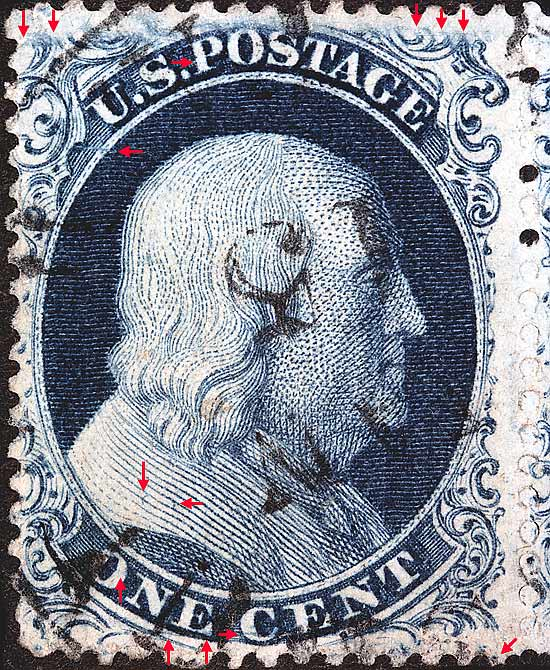
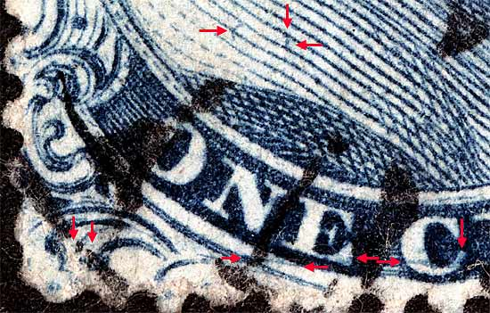
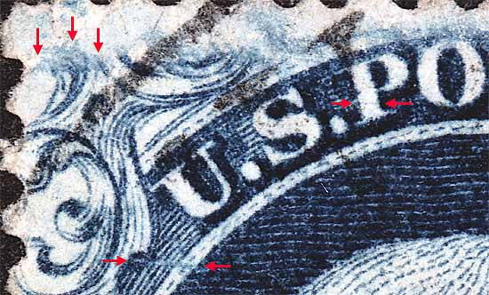
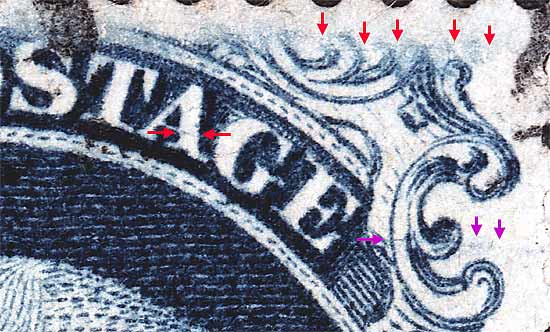
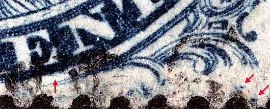

1¢ Franklin Issue of 1851-1857, PLATE 4 Pos 54L4, (Scott #21) |
| Scott # 21, Blue, Type III, Relief F Issued both imperforate and perforate. Had this been an imperforate copy then it would be Scott Number 8. Plate 4 changed it's appearance as many plating marks faded away due to plate wear, and new plating marks developed over the life of the plate. One of the most annoying aspects of trying to identify Plate 4 positions is the appearance and disappearance of these plating marks. The red arrow below the U of US indicates the small colorless "F" Relief flaw. The Ashbrook/Neinken diagrams exaggerate the size of this flaw. Courtesy of Stanley M. Piller and Associates Part of a horizontal strip of 3, 54-55-56L4 |
|  |
| Figure 1. (BELOW) Several plating marks in the lower left quadrant. The small CURL and dot on shoulder above O and N of ONE. A near horizontal line of color below the N and E of ONE. A blurry curl in the C of CENT.
 |
| Figure 2. (BELOW) A horizontal line of color in the P of POSTAGE. A horizontal blur in the unnamed ornament at the upper left and the plate flaw typical of plate 4 "F" reliefs.
 |
| Figure 3. (BELOW) A faint horizontal dash of color in the A of POSTAGE and a blurry line of color cutting thru Ornaments Y and Z. The violet arrows are marks not shown in the plating diagrams and are not known if consistent.
 |
| Figure 4. (BELOW) The right plume is shorter than normal and the guide dot can be seen at the far lower right, as illustrated in the Neinken plating diagrams.
 |
| DISCLAIMER and COPYRIGHT INFORMATION: Thanks for visiting this site. I hope you learn something new as we are making new discoveries all the time. You, the visitor, have my permission to link to my pages and to share the INFORMATION with others. The images themselves fall under the fair use guidelines established by the United States Congress and Copyright law. Basically contact us before using. I also ask in return that you send me an e-mail if I have made a mistake, or have made some other technical blunder that in my rush to put these pages up would cause the visitor confusion. Please also visit my other website at www.slingshotvenus.com. and support the live music arts. While your there, be sure to purchase our music. There are not many philatelic rock stars around and we need all the help we can get. :-) I can be reached at: nerdman@ix.netcom.com |